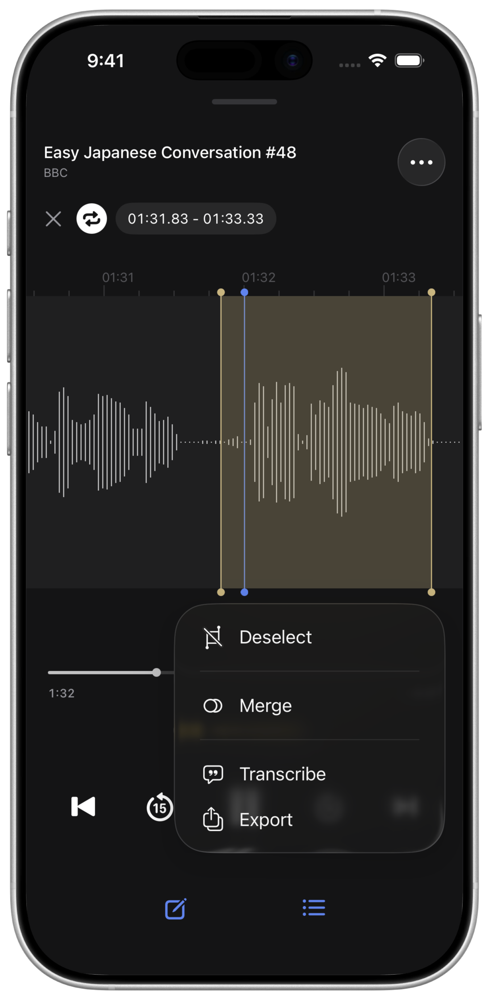
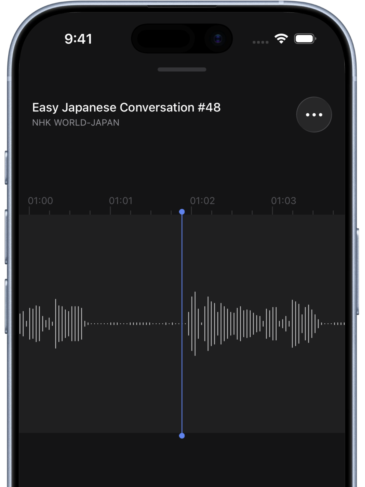
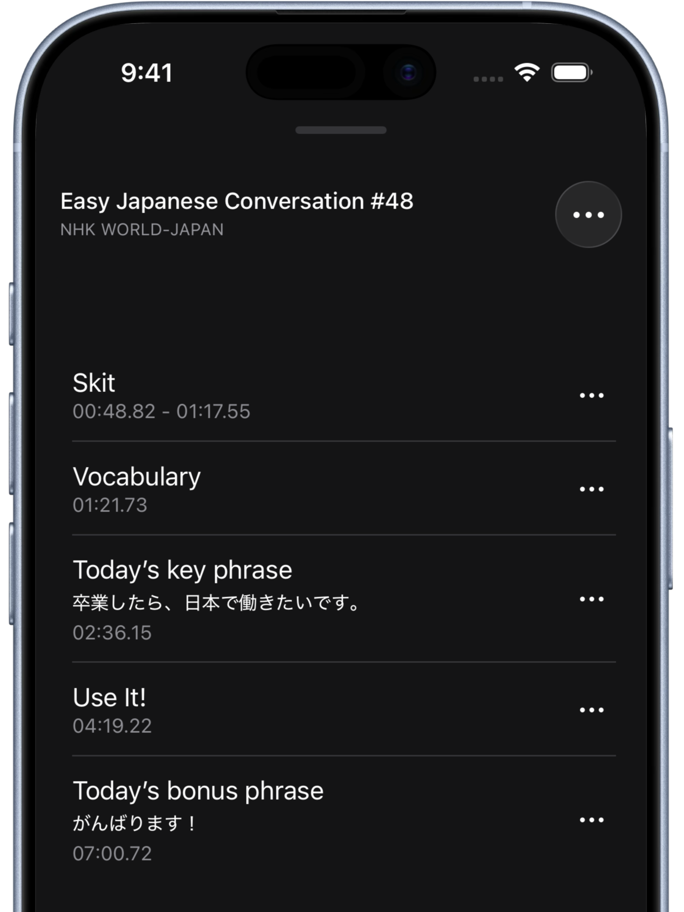
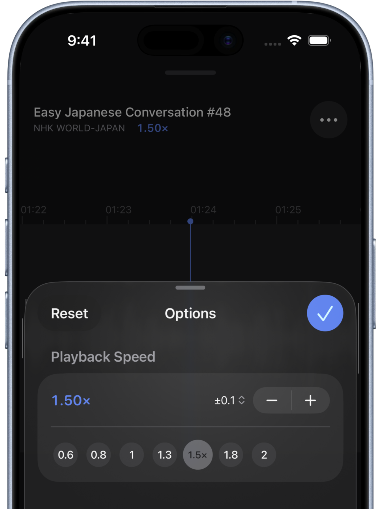
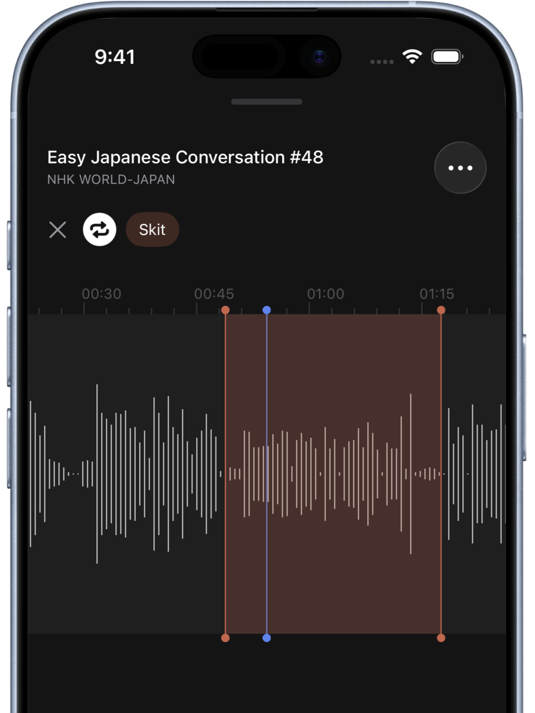

See it. Hear it.
Sailer is an iOS audio player with waveform display. Simply scroll to adjust the playback position intuitively. Perfect for language learning, music practice, and meeting transcription.

Sailer is an iOS audio player with waveform display. Simply scroll to adjust the playback position intuitively. Perfect for language learning, music practice, and meeting transcription.
No cluttered buttons. Instead, a rich set of gestures lets you do everything you need.
Scroll the audio waveform left or right to move freely to any position. Pinch open to zoom in for even finer control.

Just add a marker where you want to listen back. One tap brings you back instantly. Add titles and notes to organize your markers.

From 0.25x to 4.0x, adjustable in 0.01 increments.

Double-tap (or two-finger tap) between markers to set a playback range. Looping is also available.

Transcribe the audio within a selected range. Great for language study and meeting minutes.
Export the audio within a selected range as a separate file. Select multiple ranges to export them concatenated.
Open audio files stored on your device directly. Supports MP3, M4A, WAV and many other formats.
Add notes to each audio file. Capture your thoughts as you listen.

Repeat passages using the waveform. Improve your listening with slow playback and transcription.

Loop the phrases you want to master. Pinch to zoom into the waveform for precise timing.

Mark the choreography transitions and practice section by section.

Take notes as you listen and mark the important moments. Dramatically improve your workflow.
Free to download